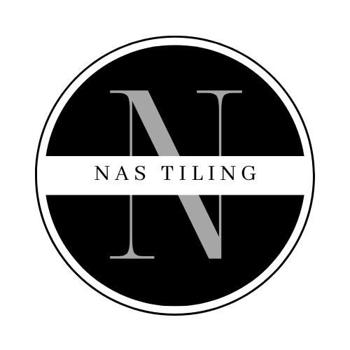

This is my website
This is a
paragraph with a line break.
This is a paragraph.

My Bonnie lies over the ocean. My Bonnie lies over the sea. My Bonnie ies ovelies over the ocean. My Bonnie lies over the ocean. Oh, H2O bring back myBonnieBonnie to me.
Twinkle twinkle little star,
How I wonder what you are.
Up above the world so high, Like a diamond in the sky.
Here is a quote from the WWF website:
For 60 years, WWF has worked to help people and nature thrive. As the world's leading conservation organization, WWF works in nearly 100 countries. At every level, we collaborate with people around the world to develop and deliver innovative solutions that protect communities, wildlife, and the places in which they live.
WWF's goal is to: Build a future where people live in harmony with nature.
The WHO was founded in 1948.
The War and Peace by Leo Tolstoy